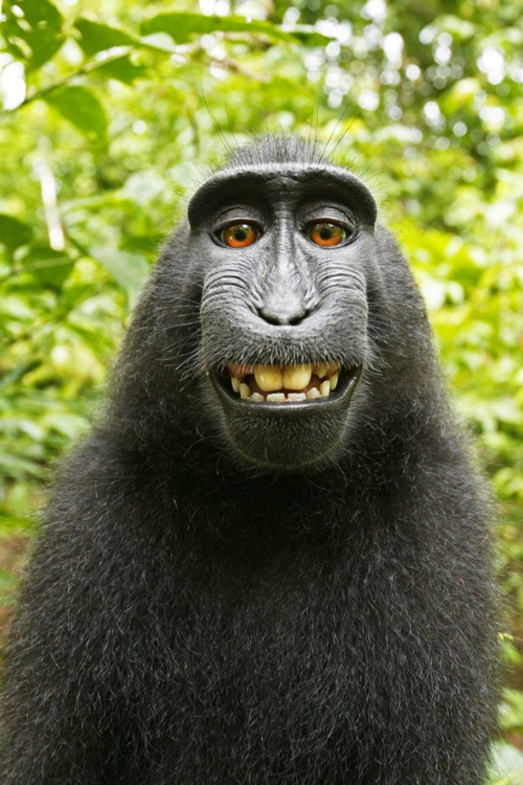
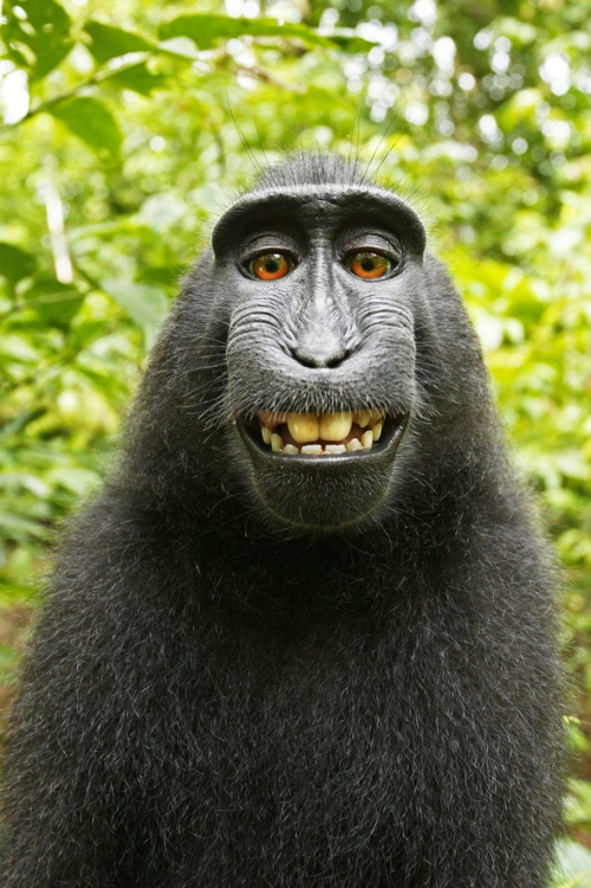

Makak selfie
Oktober 2014
Apselfier (eller monkey selfies) är selfier tagna av apor. I ett berömt exempel tog en celebesmakak bilder med utrustning som tillhörde den brittiska naturfotografen David Slater...
I djurens liv
Oktober 2014
Apselfier (eller monkey selfies) är selfier tagna av apor. I ett berömt exempel tog en celebesmakak bilder med utrustning som tillhörde den brittiska naturfotografen David Slater...